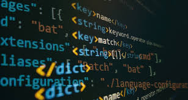
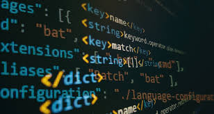

Personal Info
Ukachukwu Promise
ukazpromise@gmail.com
Current Time in UTC:17:12
Current Day:2/07/2024
Goal 1: Master Coding
Deepen my understanding of JavaScript to build complex and interactive web applications.
- Understand the fundamentals of JavaScript.
- Specialize - I will Specialize in Web development
- Practice - I need to practice what I learn
- Teach what I practice

Understand the fundamentals of JavaScript

Specialize - I will Specialize in Web development
Practice - I need to practice what I learn
Acheiving My Goals
This is where I outline How I Will Acheive My Goals
Understand the fundamentals of JavaScript: Here I will take my time lemme say 6months or there about to understand JavaScript programming fundamentals like Variables, Basic Syntax, DSA, control statements, loops, functional programming, debugging and Git/Github.
Specialize: I will after 6 months specialize and I think I will specialize in frontend web development and mobile developement. So I will learn Reactjs and NextJs very well. I will also learn to use APIs, either I RESTful APIs or GraphQL APIs or learn them both. Also I will need to delve into learning CSS frameworks Bootstrap, styled-components and TailwindCSS.
GraphQL is a query language for your API.
RESTful APIs are a set of principles for designing networked applications.
CSS frameworks like Bootstrap and TailwindCSS.
Practice:
This is where I shift from learning to practice of what I have learnt and this can be done
through building real-life projects and this can be done by sourcing for designs from dribbble
or figma and then replicate those designs and functionalities. I can also come-up with project
ideas. In all for any project I take up I will finish it in 2weeks to 1 month, so I will be
practicing for 6 to 8 months.
Dribbble is a community of designers sharing their work.

Figma is a web-based UI design tool.

Teach: For I to remember all that I have learnt and practice will need to tell someone about what I am learning, any project I am building this will help me to remember all I am doing.
It is for this reason I signed up for internship in frontend development. You can visit
HNG internship  to learn with projects which is time bound.
for you SEO optimization
To extract data from website
to learn with projects which is time bound.
for you SEO optimization
To extract data from website
Goal 2: Delve to Backend
 

Start My Journey in Back-end Development
Learn Server-Side Programming I will learn JavaScript more and NodeJs which are among the core technologies in backend developement. So for I to learn it I and freecodecamp will be paddies, they have an content when it comes to learning Backend with practicals too. feel free to check them out.